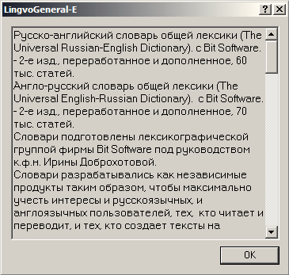

Lingvo 5.0
Хроника
Год выпуска: 1997.
Программа по прежнему двуязычна: в дистрибутив включены только английские и русские словари. Файлы системных словарей имеют расширение *.DIC.
В комплекте программы отсутствует компилятор пользовательских словарей. Упоминаний о формате DSL нет ни в справке, ни в программных файлах. Однако оформление статей в словарях выполнено с форматированием, предусматривающим применение тэгов, а в бинарных файлах словарей наблюдается (при помощи hex-редактора) их использование. Синтаксис тэгов отличается от современного: в дескрипторах не используются квадратные скобки. Открывающим дескриптором служит символ подчёркивания _, а закрывающим — подчёркивание с косой чертой _/, например, _t _/t:

Данным способом определяется использование следующих тэгов:
- b полужирного начертания;
- i наклонного начертания;
- c цветного текста (в базовой форме);
- mN отступов со значением;
- * вспомогательного текста;
- t транскрипции;
- s воспроизведения звука с содержимым в формате WAV;
- << >> ссылок в пределах текущего словаря.
Настройка с серым по умолчанию цветом подписана Optional text, что, по-видимому, свидетельствует о её отношении к вспомогательному тексту (см. недоумение по поводу наименования этой настройки в более поздних версиях).
В системном словаре, открытом в hex-редакторе (см. иллюстрацию выше), в слове LingVo буква V — заглавная. Такое написание не случайно, оно отражает попытку программиста Александра Москалёва истрактовать название программы как LING(uist) VO(lume). В одной из ранних версий такая «расшифровка» даже использовалась в заставке, но затем была отбракована лингвистами. Любопытно, что в шапке бинарных файлов системных словарей LSD написание LingVo сохраняется до сих пор.
Внешний вид
Основное окно программы, список заголовков:

Словарная карточка:

Окошко аннотации словаря:

Окно управления словарями:

Окно настроек:

Окошко «О программе»:

Состав словарей
Англо-русские и русско-английские словари
| № | Наименование | Автор | Объём |
|---|---|---|---|
| 1. | Англо-русский технический словарь | В. А. Ковалев | 80 тыс. статей |
| 2. | Русско-английский технический словарь | В. А. Ковалев | 100 тыс. статей |
| 3. | Краткий англо-русский озвученный словарь | Bit Software | 5 тыс. статей |
| 4. | Англо-русский словарь по робототехнике | Е.К. Масловский | 10 тыс. статей |
| 5. | Англо-русский словарь пользователя персонального компьютера | Е.К. Масловский | 10 тыс. статей |
| 6. | Русско-английский словарь общей лексики | Bit Software | 60 тыс. статей |
| 7. | Англо-русский словарь общей лексики | Bit Software | 70 тыс. статей |
| 8. | Англо-русский экономический словарь | Bit Software | 20 тыс. статей |
| 9. | Русско-английский экономический словарь | Bit Software | 20 тыс. статей |
| 10. | Большой англо-русский словарь по вычислительной технике | Е.К. Масловский | 30 тыс. статей |
Русские словари
| № | Наименование | Автор | Объём |
|---|---|---|---|
| 1. | Тезаурус русской деловой лексики | Bit Software | 15 тыс. статей |